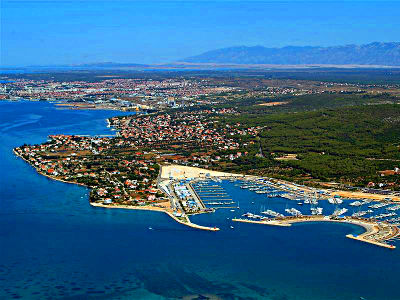

O Apartmanu Olive
Sve što trebate znati o vašem savršenom ljetnom domu
Ugodan i potpuno opremljen prostor
Apartman Olive smješten je na 2. katu obiteljske kuće u Bibinjama. Pristup je putem stepeništa, s privatnim ulazom koji vodi u zajednički prostor kuhinje i blagovaonice.
Apartman je jednosoban, za 2+1 osobu: bračni par ili dvoje gostiju u prostornoj sobi s izlazom na terasu, plus jedna osoba na pomoćnom ležaju. Kućni ljubimci nisu dozvoljeni.
Svaki detalj je promišljen kako bi vaš boravak bio udoban i opušten – od klimatizacije do kompletnog kuhinjskog posuđa.

Osnovne informacije
| Karakteristika | Detalj |
|---|---|
| Broj osoba | 2 + 1 |
| Veličina | 37 m² |
| Pozicija | 2. kat, privatni ulaz |
| Parking | 1 besplatno mjesto ispred kuće |
| Udaljenost od mora | 50 metara |
| Kućni ljubimci | Nisu dozvoljeni |

Sve što vam treba za odmor
Apartman je potpuno opremljen svime što je potrebno za ugodan boravak – ne morate ponijeti ništa osim osobnih stvari i kupaoničkih potrepština.
Izravni pristup moru
Jedno od najvećih aduta Apartmana Olive je dvorište s izravnim izlazom na plažu – od kauča do mora za manje od minute.
U dvorištu su dostupni i sadržaji za cijelu obitelj:


Bibinje – srce Zadarske rivijere
Bibinje su mirno mjesto uz more, svega 5 minuta vožnje od Aerodroma Zadar i 15 minuta od centra Zadra. Poznate su po dugoj šetnici uz obalu, ribljim restoranima i čistom moru.
Iz Bibinja lako dostižete neka od najljepših mjesta Dalmacije:
Aktivnosti u okolici
Bibinje su idealna polazna točka za istraživanje najljepših dijelova Dalmacije.
NP Kornati
Izlet brodom do najpoznatijeg hrvatskog arhipelaga – nezaboravan doživljaj.
NP Krka
Prekrasni slapovi i kristalno čista rijeka – idealno za obiteljski izlet.
Grad Zadar
Morske orgulje, Pozdrav suncu i rimski forum – kultura i zabava svega 15 min dalje.
NP Paklenica
Planinarenje i penjanje u kanjonu – za ljubitelje aktivnog odmora u prirodi.